Algorithms I, Princeton University, P3
这是 Algorithms I & II, Princeton 系列笔记的 P3 部分。这一节的笔记将介绍：
- (核心) 符号表。
- 二叉搜索树 BST。
- 平衡搜索树—— 2-3 树与红黑树。
- 几何搜索问题。
- 1 维集合搜索问题：借助 BST，平衡搜索树。(variant. 区间搜索树)
- 2 维集合搜索问题：扫描线算法转化为 1 维。KD 树。
- 哈希表。
This article is a self-administered course note.
It will NOT cover any exam or assignment related content.
Symbol Tables
Symbol tables is a data structure that supports key-value pair abstraction.
- Insert a value with specified key.
- Given a key, search for the corresponding value.
Some conventions.
- Values are not
null. - Method
get()returnsnullif key not present. - Method
put()overwrites old values with new value.
In Java implementation, Value type could be any generic
type, Key type:
- If we specify
Comparablein API, assume keys areComparable, usecompareTo(). - Assume keys are any generic type, use
equals()to test equality. - Assume keys are any generic type, use
equals()to test equality, usehashCode()to scramble keys.
We will introduce several implementations of symbol tables below. They have different application scenarios.
- Elementary symbol table.
- Linked-list implementation with sequential search. [unordered keys]
- Resizing-array implementation with binary search. [ordered keys]
- BST-based symbol table. [ordered keys]
- Ordinary BST.
- Balanced Search Tree. (ex. 2-3 tree, red-black tree)
- Hash table. [unordered keys]
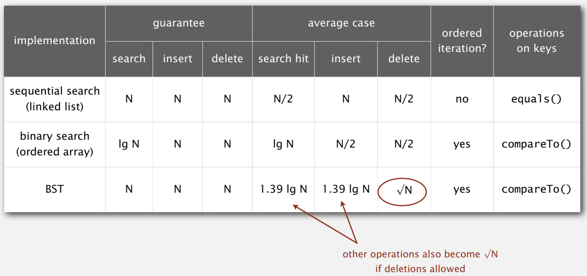
See the ordered symbol table API below. (Note that BST-based symbol table is also ordered)
1 | public class ST<Key extends Comparable<Key>, Value> { |
Binary Search Tree
这一节需要配合快排部分的 partition 思想食用。两个算法之间的 correspondence 真的很奇妙啊！
BST Properties
Symmetric order. Each node has a key, and every node's key is:
- Larger than all keys in its left subtree.
- Smaller than all keys in its right subtree.
Therefore, inorder traversal of a BST yields keys in ascending order.
A node in BST should contain three four fields: key, value, references to left node and right node.
1 | private class Node { |
Note that Key and Value are generic types;
Key is Comparable.
Insertion and Deletion
Operation put: Associate value with key.
1 | public void put(Key key, Value val) { root = put(root, key, val); } |
Deletion is BST is much more tricky. The lazy approach is to set tombstones, which easily leads to memory overload. So we introduce Hibbard deletion here.
To delete a node with key k; search for node
t containing key k.
- Case 0. [0 children] Delete
tby setting parent link tonull. - Case 1. [1 child] Delete
tby replacing parent link to its child. - Case 2. [2 children] Delete
t's predecessor or successor and replacetwith it.- Find the successor
xoft. - Delete
x, but don't garbage collect it. (xhas no left child, so it will be case 0 or 1) - Put
xint's spot.
- Find the successor
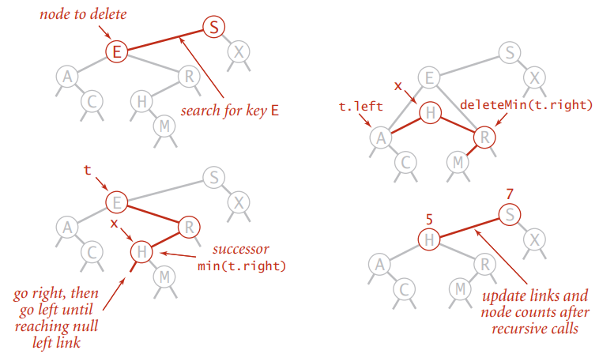
1 | public void delete(Key key) { root = delete(root, key); } |
Hibbard deletion is NOT symmetric; it may lead to BST degenerating with height \(\sim\sqrt{N}\).
If for every Hibbard deletion, we flip a coin to decide whether
replacing t with its predecessor or successor, then the
expected height of BST will be \(\sim
\lg{N}\). (this lacks rigorous mathematics proof)
BSTs and Quicksort Partitioning
BSTs highly correspond to quicksort partitioning. Given \(N\) distinct keys, we could simply build a BST using quicksort partitioning.
Here is the basic idea:
- Set the current partitioning item
a[j]as the root. - Note that
a[lo...j-1]are no larger thana[j], anda[j+1...hi]are no smaller thana[j]; this corresponds to BST's symmetric order. - Set the partitioning item in
[lo, j-1]asa[j]'s left son, and the one in[j+1, hi]as the right son.
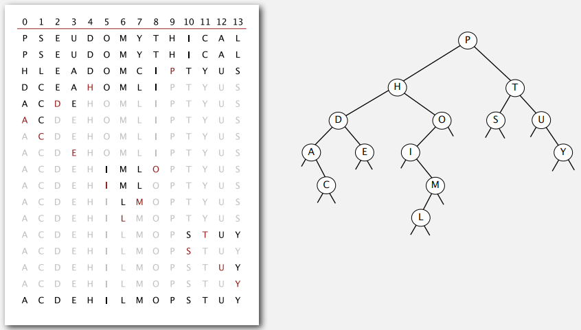
The proof is 1-1 correspondence with quicksort partitioning.
Therefore, we could see that just like the efficiency of quicksort depends on the random shuffle of the items, the efficiency of BST highly depends on the randomness of inserting keys.
If \(N\) distinct keys are inserted in random order, the expected height of BST is \(\sim4.311\ln{N}\). But worst-case height of BST is \(N\), which means \(\sim N^2\) compares are needed for a search/insert.
2-3 Search Trees
接下来我们将介绍两种著名的平衡搜索树 (Balanced Search Tree)，2-3 树与红黑树。与二叉搜索树 BST 不同，无论插入的键值顺序是否随机，平衡搜索树总能维持平衡；其树高是稳定的 \(\sim \lg{N}\)。
Robert Sedgewick 教授总能把这种复杂的算法讲得深入浅出；之前一直对红黑树望而却步的我第一次理解了其本质：它其实是左倾 2-3 树的二叉树表现形式。(后来我才发现 Sedgewick 教授本人就是红黑树的发明者之一，甚至 Red Black Tree 这个名字也是他参与提出的)
2-3 Tree Properties
2-3 tree allows 1 or 2 keys per node. It consists of two kinds of nodes:
- 2-node: one key, two children.
- 3-node: two keys, three children.
For a 3-node with keys \(l\) and \(r\), the keys in left subtree are \(<l\), the keys in middle subtree are between \(l\) and \(r\), and the keys in right subtree are \(> r\).
Therefore, just like BST, the inorder traversal of 2-3 tree yields keys in ascending order.
2-3 tree also achieves perfect balance.
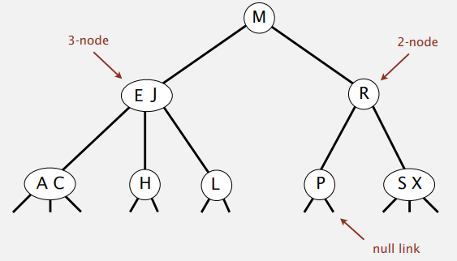
Insertion
When inserting a key into 2-3 tree.
- Find the corresponding bottom node.
- If it is a 2-node at bottom.
- Insert the key into the 2-node so it becomes a 3-node.
- If it is a 3-node at bottom.
- Insert the key into the 3-node to create a temporary 4-node. (contains ascending 3 keys)
- Move middle key in 4-node into parent and split it into two 2-nodes.
- Repeat up the tree as necessary.
- If you reach the root and it's a 4-node, split it into three 2-nodes. (height increases)
Note that each transformation maintains symmetric order and perfect balance; the height of 2-3 tree increases only when every node on the search path from the root is a 3-node.
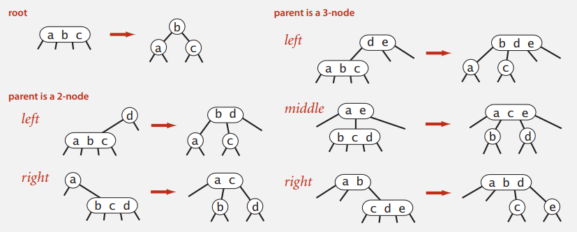
Performance
Perfect balance of 2-3 trees guarantees logarithmic performance for search and insert.
Tree height.
- Worst case [all 2-nodes]: \(\lg{N}\).
- Best case [all 3-nodes]: \(\log_3{N}\approx .631\lg{N}\).
The order of growth of symbol table implemented with 2-3 tree is \(\sim c\lg{N}\); the constants depend upon implementation.
Red-Black BSTs
We will introduce left-leaning red-black BSTs. It is essentially a representation of 2-3 tree as a BST. In particular, we use internal left-leaning links as "glue" for 3-nodes.
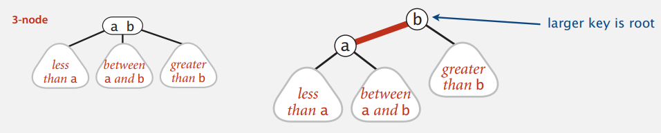
The internal links are marked as red links, while the rest of the links (the external links connecting different nodes) are marked as black links.
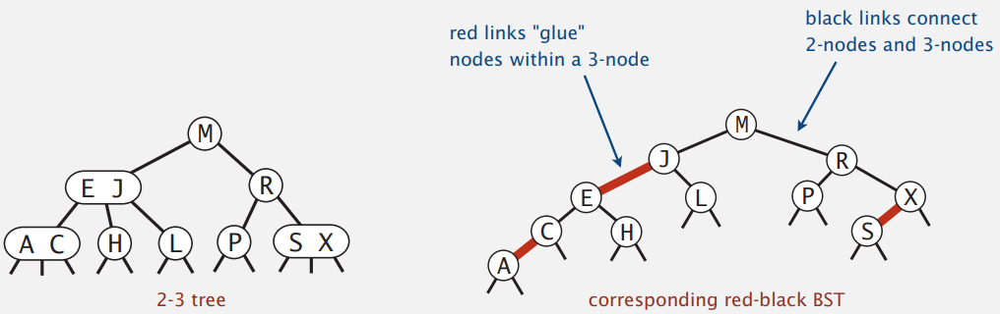
We encode color of links in nodes since each node is pointed by precisely one link from its parent.
1 | private static final boolean RED = true; |
Properties
Red Black Trees is a BST such that:
- No node has two red links connect to it.
- Perfect black balance: Every path from root to null link has the same number of black links.
- Red links lean left.
The above properties could be easily observed due to 1-1 correspondence between 2-3 and LLRB.
- Any 3-node corresponds to only one internal red link.
- 2-3 tree achieves perfect balance.
Elementary operations
- Left rotation. Orient a (temporarily) right-leaning red link to lean left.
- Right rotation. Orient a left-leaning red link to (temporarily) lean right.
- Color flip. Recolor to split a (temporary) 4-node.
Left & Right rotation are mirror images of each other; They change the leaning direction of a red link without violating symmetric order and perfect black balance.
Color flip simulates the splitting of a temporary 4-node; for a node with two red son links (they glue it and its sons together), we flip the color of its two son links and its parent link.
1 | private void flipColors(Node h) { |
Insertion
The insertion in a LLRB tree maintains 1-1 correspondence with 2-3 trees by applying elementary red-black BST operations.
Case 1. Insert into a 2-node at bottom.
- Do standard BST insert; color new link red.
- If new red link is a right link, rotate left.
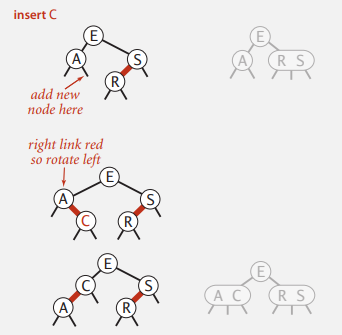
Case 2. Insert into a 3-node at bottom.
- DO standart BST insert; color new link red.
- Rotate to balance the 4-node (if needed).
- Flip colors to pass red link up one level.
- Rotate to make lean left (if needed).
- Repeat case 1 or case 2 up the tree (if needed).
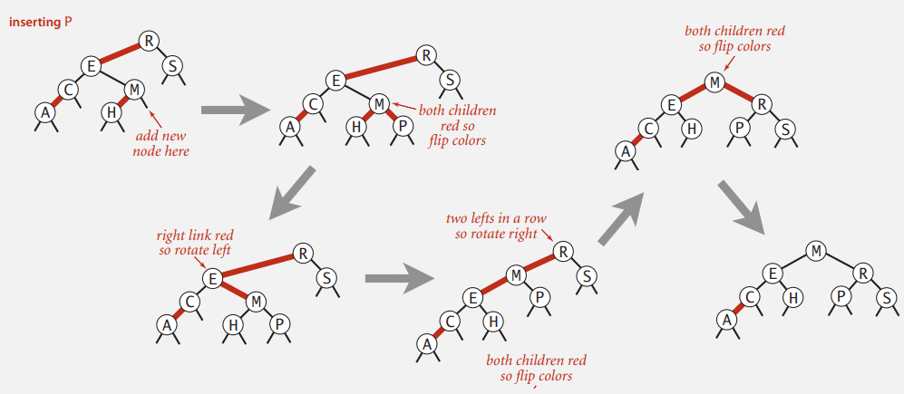
See the Java implementation below: this is the code for all cases.
1 | private Node put(Node h, Key key, Value val) { |
Performance
Proof (guaranteed by properties).
- Black balance. Every path from root to null link has the same number of black links.
- Never two red links in-a-row.
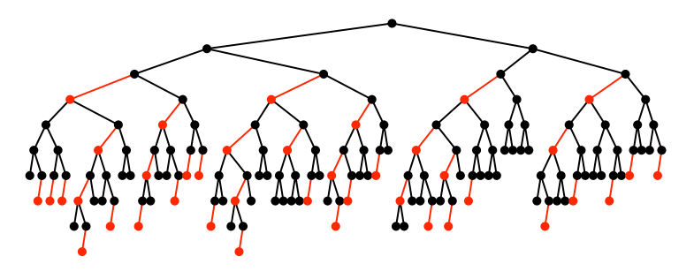
1d Geometric Search
在学习二叉搜索树与平衡树之后，我们将介绍其在图形化搜索中的重要应用。这一节包括了：
- 1d range search: 基本数据是点，询问区间
[lo,hi]中包含的点。 - 1d interval search: 基本数据是区间，询问区间
[lo,hi]所相交的所有区间。
1d Range Search
Geometric interpretation:
- Keys are point on a line.
- Count/find points in a given 1d interval.
Build a BST out of the given keys (points).
- count [\(\sim \log{N}\)]. return
rank(hi)-rank(lo)+1. - find [\(\sim\log{N}+R\)].
- Recursively find all keys in left subtree (if any could fall in range).
- Check key in current node.
- Recursively find all keys in right subtree (if any could fall in range).
\(N\) is the total number of points, \(R\) is the matching points in a single search.
1d Interval Search
Create a BST, where each node stores an interval \((lo, hi)\).
- Use left endpoint as BST key.
- Store max endpoint in subtree rooted at node.
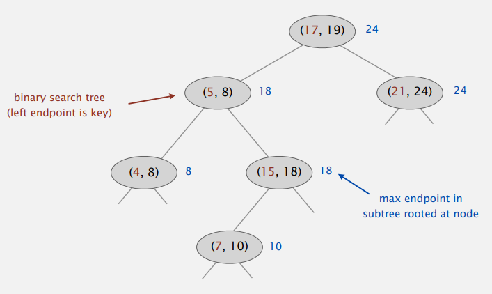
To search for intervals that intersects query interval \((lo, hi)\):
- Check the interval in current node.
- If interval in node intersects query interval:
- Recursively search all intervals in left subtree.
- Recursively search all intervals in right subtree.
- If interval in node doesn't intersects query
interval: (# see proof below)
- If left subtree is null, go right.
- Else if max endpoint in left subtree is less than \(lo\), go right.
- Else go left.
A tricky case: If the current interval doesn't intersect and search goes left, then there is either an intersection in left subtree or no intersections at all.
Pf. (#) We assume the interval with the max endpoint is
[c, max]. no intersections in left subtree \(\to\) \(lo<hi<c\) \(\to\) no intersections in right.
The order of growth of running time for \(N\) intervals is \(\sim R\log{N}\) in average. It is better to use a red-black RST to guarantee performance.
Sweep-Line Algorithm
Sweep-line algorithm coverts:
- Orthogonal line segment intersection problem \(\to\) 1d range search.
- Orthogonal rectangle intersection problem \(\to\) 1d interval search.
Orthogonal line segment intersection.
Given \(N\) horizontal and vertical line segments, find all intersections. (non-degeneracy assumption: all x- and y-coordinates are distinct).
To solve this, we maintain a sweep vertical line from left to right.
- x-coordinates define events. [\(N\log{N}\)]
- horizontal segment (left endpoint): insert y-coordinate into BST. [\(N\log{N}\)]
- horizontal segment (right endpoint): remove y-coordinate from BST. [\(N\log{N}\)]
- vertical segment: range search for interval of y-endpoints. [\(N\log{N}+R\)]
Note that \(R\) refers to the number of intersections.
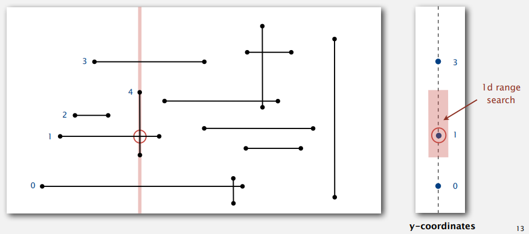
Orthogonal rectangle intersection.
Find all intersections among a set of \(N\) orthogonal rectangles. (non-degeneracy assumption: all x- and y-coordinates are distinct)
To solve this, we maintain a sweep vertical line from left to right.
- x-coordinate of left and right endpoints define events. [\(N\log{N}\)]
- Maintain set of rectangles that intersect the sweep line in an interval search tree using y-intervals of rectangle. [\(N\log{N}+R\log{N}\)]
- Left endpoint: interval search for y-interval of rectangle; insert y-interval. [\(N\log{N}\)]
- Right endpoint: remove y-interval. [\(N\log{N}\)]
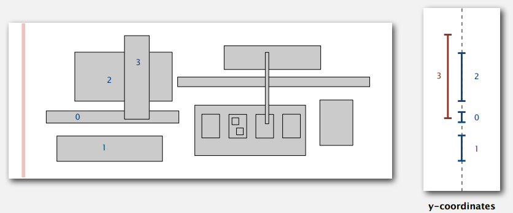
Kd Tree
普通的 BST 以及平衡树已经能够解决许多一维的图形搜索问题；借助扫描线算法的转化，它们也能够解决部分的二维图形搜索问题。那么当我们的基本数据有着大于等于二的维度呢？此时就需要依靠其他的空间划分树 (space partitioning tree) 来进行处理了。这里将会介绍其中一个简单优美的 k 维空间划分树：KD 树。
2d Orthogonal Range Search
Given \(N\) distinct 2d keys in a plane.
- Range search: find all keys that lie in a 2d range.
- Range count: number of keys that lie in a 2d range.
A simple solution is the grid implementation.
- Divide space into M-by-M grid of squares. [rule of thumbs: \(M=\sqrt{N}\)]
- Create list of points contained in each square.
- Use 2d array to directly index relevant square.
- Insert: add \((x,y)\) to list for corresponding square.
- Range search: examine only squares that intersect 2d range query.
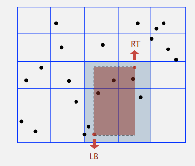
Grid implementation is a fast, simple algorithm for evenly-distributed points.
- Initialization. [\(N\)]
- Insert point. [\(1\)]
- Range search. [\(R\)]
However, it becomes inefficient when clustering happens. To solve this, we need data structures that adapts gracefully to data.
2d Tree
2d tree is a space-partitioning tree that recursively divide space into two halfplanes.
2d tree is essentially a BST, but alternate using x- and y-coordinates as key.
- Search operation gives the rectangle containing point.
- Insert operation further subdivides the plane.
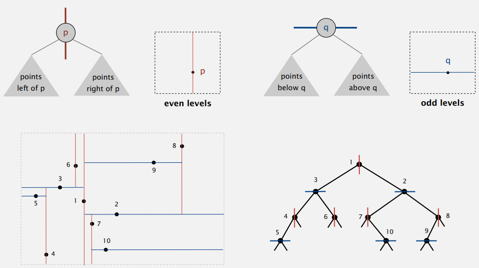
Here is the inner class Node for a typical 2D tree
implementation.
1 | private static class Node { |
View my code repository for this course; it contains two applications of 2d tree:
- 2d orthogonal range search.
- Typical case. [\(R+\log{N}\)]
- Worst case (even if tree is balanced). [\(R+\sqrt{N}\)]
- Nearest neighbor - find closest point to query point.
- Typical case. [\(\log{N}\)]
- Worst case (even if tree is balanced). [\(N\)]
From 2d to Kd
Kd tree is the generalization of 2d tree. It is an efficient data structure for processing k-dimensional data. The implementation is similar to 2d tree: we just cycle through dimensions ala 2d trees.
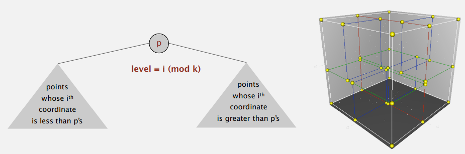
Hash Tables
Use BST and red-black BST to implement symbol tables could achieve average \(\sim \lg{N}\) cost per operation. But with different access to the data, we could do better.
The basic plan is to save items in a key-indexed table (index is a function of the ley).
Issues.
- Efficiently computing the hash function.
- Equality test: Method for checking whether two keys are equal.
- Collision resistance: Algorithm and data structure to handle two keys that hash to the same array index.
Hash Functions
Use hashCode() to get hash values. View P4 on how to
implement hashCode() for user-defined type.
Note that hashCode() returns an int between
\(-2^{31}\) and \(2^{31}-1\); but what we need is an
int between \(0\) and
\(M-1\) (for use as array index).
1 | private int hash(Key key) { |
The efficiency of hash tables is based on the uniform hashing assumption.
Collision Resolutions
Two kinds of symbol tables could effiiciently handle collision under uniform hashing assumption.
- Separate chaining symbol table.
- Linear probing symbol table.
Separate chaning ST. Use an array of \(M<N\) linked lists.
- Hash: map key to interger \(i\) between \(0\) and \(M-1\).
- Insert: put at front of the i-th chain (if not already there).
- Search: need to search only i-th chain.
1 | public Value get(Key key) { |
Consequence. Number of probes (equals() and
hashCode()) for search/insert is proportional to \(N/M\). It is \(M\) times faster than sequential
search.
- \(M\) too large \(\to\) too many empty chains.
- \(M\) too small \(\to\) chains too long.
- Typical choice: \(M\sim N/5\) \(\to\) constant-time ops.
Linear probing ST. (open addressing) When a new key collides, find next empty slot, and put it there.
- Hash. Map key to integer \(i\) between \(0\) and \(M-1\).
- Insert. Put at table index \(i\) if free; if not try \(i+1\), \(i+2\), etc.
- Search. Search table index \(i\); if occupied but no match, try \(i+1\), \(i+2\), etc.
Note that array size \(M\) must be greater than number of key-value pairs \(N\).
1
2
3
4
5
6
7
8
9
10
11
12
13public Value get(Key key) {
for (int i = hash(key); keys[i] != null; i = (i+1) % M)
if (key.equals(keys[i])) return vals[i]; // search hit
return null; // search miss
}
public void put(Key key, Value val) {
int i;
for (i = hash(key); keys[i] != null; i = (i+1) % M)
if (keys[i].equals(key)) break;
keys[i] = key;
vals[i] = val;
}
Proposition. Under uniform hashing assumption, the average # of probes in a linear probing hash table of size \(M\) that contains \(N=\alpha M\) keys is: \(\sim \frac{1}{2}(1+\frac{1}{1-\alpha})\) for a search hit; \(\sim \frac{1}{2}(1+\frac{1}{(1-\alpha)^2})\) for a search miss/insert/delete.
- \(M\) too large \(\to\) too many empty array entries.
- \(M\) too small \(\to\) clustering happens. search time blows up.
- Typical choice: [half full] \(\alpha=N/M\sim 1/2\).
- # probes for search hit is about \(3/2\).
- # probes for search miss is about \(5/2\).
The deletion in linear-probing ST is a bit tricky.
- Tombstones.
- Reinsert all of the key-value pairs in the same cluster appeared after the deleted key-value pair.
Hash Tables vs. BST
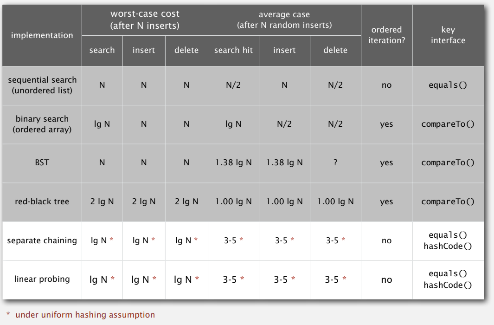
Hash tables.
- Simplier to code.
- No effective alternative for unordered keys.
- Faster for simple keys in practice (a few arithmetic ops versus \(\log{N}\) compares).
Balanced search trees.
- Stronger performance guarantee. (Hash tables need uniform hashing assumption)
- Support for ordered ST operations.
- Easier to implement
compareTo()correctly thanequals()andhashCode().
Java system includes both implementation:
- Red-black BSTs:
java.util.TreeMap,java.util.TreeSet. - Hash tables:
java.util.HashMap,java.util.IdentityHashMap.
Reference
This article is a self-administered course note.
References in the article are from corresponding course materials if not specified.
Course info:
Algorithms, Part 1, Princeton University. Lecturer: Robert Sedgewick & Kevin Wayne.
Course textbook:
Algorithms (4th edition), Sedgewick, R. & Wayne, K., (2011), Addison-Wesley Professional, view